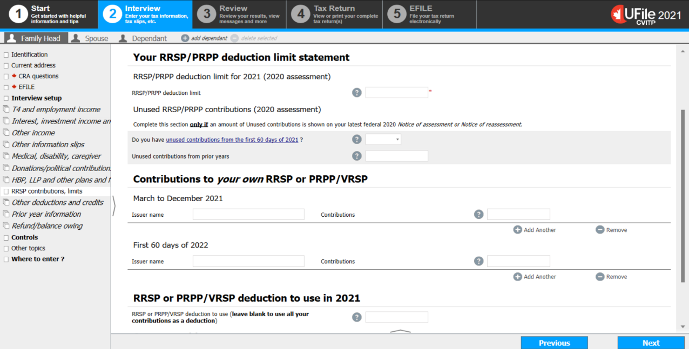

It is important to enter the medical expenses in the profile of the family member for whom they were incurred.
In the profile of the individual who has the disability or infirmity, claim one of the following:
- disability tax credit
- Canada caregiver amounts
- disability supports deduction
- home accessibility expenses
Depending on which profile the information needs to be entered, choose one of the following sections in the menu of the software:
- Family head, spouse or common-law partner
- Dependant
Interview setup (Family Head, Spouse)

- select the Interview setup from the left side menu
Instructions for:
- Medical expenses for the family head, spouse or common-law partner
- Disability tax credit for the family head, spouse or common-law partner
- Canada caregiver amounts for family head, spouse or common-law partner
- Disability supports deduction
- Home accessibility expenses
- from the common tax deduction section check the box next to Medical expenses, disability, caregiver and click Next
click next step
Instructions for donations and carried forward donation amounts
- from the common tax deduction section check the box next to Donations and federal political contributions and click Next
click next step
Instructions for RRSP deduction limit and RRSP contributions from RRSP or PRPP/VRSP receipt
- from the common tax deduction section check the box next to RRSP, HBP, LLP, other plans and funds (T5006) and click Next
click next step
Interview setup (Dependant)

Instructions for:
- Medical expenses for a dependant
- Disability tax credit for a dependant
- Canada caregiver amounts for a dependant
- Disability supports deduction
- Home accessibility expenses
- select Medical and disability from the left side menu
click next step
Instructions for donations and carried forward donation amounts
- select the Interview setup from the left side menu
- in the common tax deductions section, check the box next to Donations and federal political contributions and click Next
click next step
Instructions for RRSP deduction limit and RRSP contributions from RRSP or PRPP/VRSP receipt
- select the Interview setup from the left side menu
- in the common tax deductions section, check the box next to RRSP, HBP, LLP, other plans and funds and click Next
click next step
Medical expenses, disability deductions (Family Head, Spouse)

Instructions for:
- Medical expenses
- Disability tax credit and Canada caregiver amounts
- Disability supports deduction
- Home accessibility expenses
- select Medical, disability, caregiver from the left side menu
- click the + sign next to Medical expenses
click next step
Instructions for the disability tax credit (line 31600) and caregiver amount
- click the + sign next to Infirmity and Disability amounts claim for yourself (line 31600)
click next step
Instructions for the disability supports deduction (line 21500) for attendant care, etc.
- click the + sign next to Disability supports deduction for attendant care
click next step
Instructions to claim renovation expenses as home accessibility expenses
- click the + sign next to Home accessibility expense (line 31285)
click next step
Medical expenses, disability deductions (Dependant)

Instructions for medical expenses
- click the + sign next to Medical expenses for dependant
click next step
Instructions for the disability tax credit and caregiver amount for a dependant
- click the + sign next to Infirmity and disability amounts for the dependant
click next step
Instructions to claim the disability supports deduction (line 21500)
- click the + sign next to Disability supports or attendant care needed by the dependant to earn income (line 21500)
click next step
Instructions to claim renovation expenses as home accessibility expenses
- click the + sign next to Home accessibility expense (line 31285)
click next step
Instructions to control how the Canada caregiver amount (line 30450) is applied for other infirm dependants age 18 or older
- click the + sign next to Canada caregiver amount to claim for this dependant (line 30450)
click next step
Medical Expenses (Family Head, Spouse and Dependant)

It is important to enter the total amount of expenses paid in the appropriate categories. The software will automatically apply the federal and provincial limits for the specified expense and enter the eligible amount on the return.
- if an expense is eligible for more than one credit or deduction, enter it only once in the software
- Medical expenses
- it is not necessary to enter each receipt individually; enter See list in the description and indicate the total amount of eligible medical expenses
- Expenses for medical services not available in your area
- travel expenses, depending on the number of kilometers travelled one way
- Specified medical expenses (not claimed elsewhere)
- Cost of attendant care
- salaries and wages for attendant care given in Canada. This can include the part of the nursing home fees paid for full-time care that relate only to salaries and wages.
- Fees for a residential and long-term care centre
- fees paid for full-time care in a nursing home
- Cost of attendant care
- click Next
Canada caregiver amount, disability tax credit (Family Head, Spouse)

- claim both the disability tax credit and the Canada caregiver amount on the Infirmity and disability screen
- enter the applicable information in Name or description of infirmity
In UFile, this is a mandatory field; however, this information is not transmitted to the CRA. If the individual does not volunteer this information, simply enter Disability into the field.
- answer the question Are you eligible for the disability amount on federal line 31600?
- if the individual is claiming the disability amount for the first time, select Claim disability amount (1st or new application) from the drop-down menu
- answer the question Does this infirmity provide entitlement to the Canada caregiver amount?
- if the individual has a spouse or common-law partner to whom they transfer the disability amount on their Schedule 2, you must answer the question Does CRA already have an approved T2201 form registered in the account of your spouse or common-law partner?
- click Next
Claiming the Canada caregiver amount and disability (Dependant)

- claim both the disability tax credit and the Canada caregiver amount on the Dependant’s infirmity and disability screen
- enter the applicable information in Name or description of dependant’s infirmity
In UFile, this is a mandatory field; however, this information is not transmitted to the CRA. If the individual does not volunteer this information, simply enter Disability into the field.
- answer the question Is the dependant eligible for the disability amount on federal line 31600?
- if the dependant is claiming the disability amount for the first time, select Claim disability amount (1st or new application) from the drop-down menu
The software will automatically transfer any unused portion of the dependant’s disability amount to the person supporting them.
- complete the fields under Dependant’s unused disability amount to control how the dependant’s unused disability amount should be treated.
The software will automatically claim the Canada caregiver amount for other infirm dependants age 18 or older in the tax return of the person supporting them, or their spouse or common-law partner.
- click Next
Caregiver amount (Dependant)

- answer the applicable questions to control how the Canada caregiver amount for other infirm dependants age 18 or older should be treated
- click Next
Disability supports or attend care needed to earn income

- fill in the necessary fields
- here, do not enter any amounts already entered as medical expenses
- click Next
Home accessibility expenses

- enter the details of the home accessibility expenses for the individual
- Select how you want to claim the Federal Home Accessibility Expenses credit
- In most cases, you can select Let MaxBack decide (default).
- answer Yes to the question Are you eligible to claim federal Home accessibility expenses?
- Select how you want to claim the Federal Home Accessibility Expenses credit
- complete the fields under Home renovation expenses
- enter the Supplier or contractor name, the Date, description and amount of eligible home renovation expense
- if applicable, answer Yes to the question Is this expense an allowable Federal medical expense?
If you select Yes, do not enter this expense in the Medical expenses section. The software will automatically claim it as a medical expense.
- if the information is available, complete Supplier or contractor GST/HST Number (if applicable)
- if applicable, complete Description and amount claimed by other eligible individuals (other than spouse and dependents)
- click Next
Donations and federal political contributions

Instructions for donations and carried forward donation amounts
- select Donations/political contributions from the left side menu
- from the Donations or giftssection, click the + sign next to Canadian charitable donations (other than per T4 slip and other slips)
click next step
Canadian charitable donations

- enter the Amount of donation
- enter the name of the Organization that received the charitable donation
- it is not necessary to enter each receipt individually; enter See list in Organization that received the charitable donation and indicate the total amount in Amount of donation
- select Gift in money ($) from the drop down menu to Specify the nature of the donation
Contributions to a RRSP or PRPP/VRSP – RRSP receipt
- select RRSP contributions, limits from the left side menu
- enter the RRSP/PRPP deduction limit (from the individual’s last notice of assessment, reassessment, or you can use AutoFill My Return)
- enter the Unused contributions from prior years (from the individual’s last notice of assessment, reassessment, or you can use AutoFill My Return); leave blank if the individual doesn’t have any
- enter the Issuer name and contributions from March to December 2021 and for the First 60 days of 2022
- RRSP or PRPP/VRSP deductions to use (leave blank to use all your contributions as a deduction)